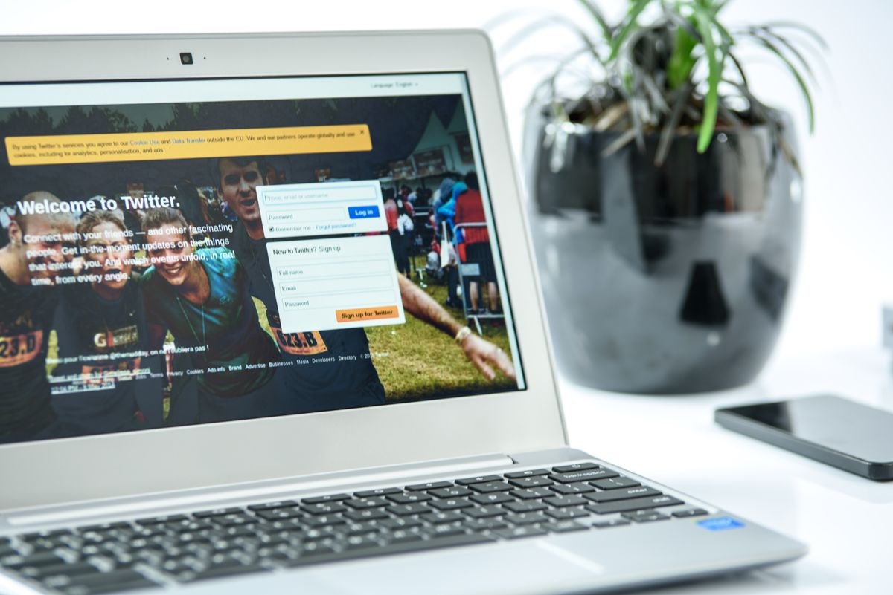
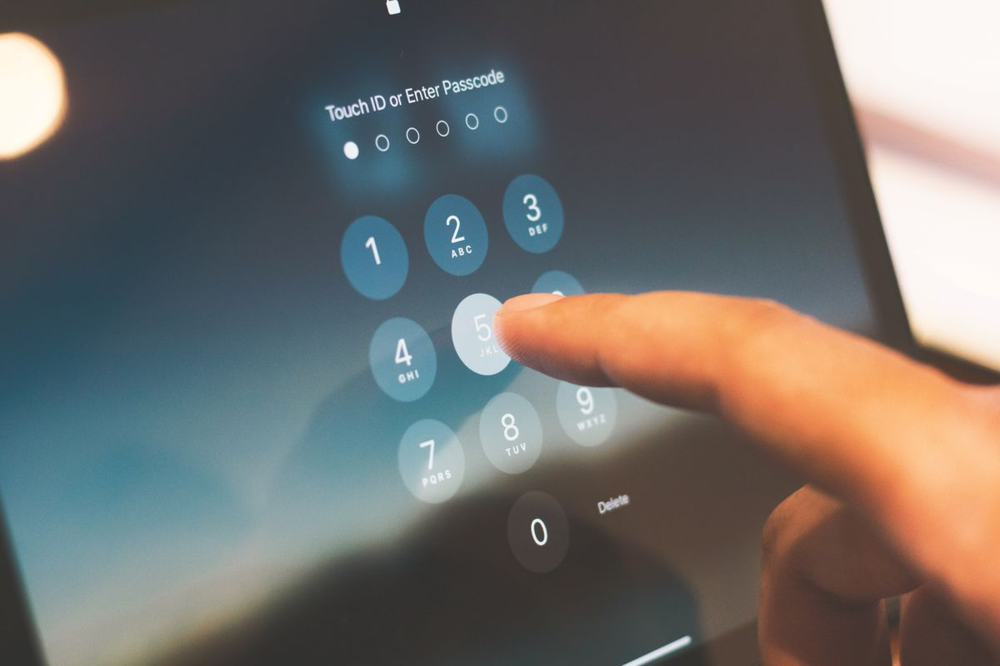
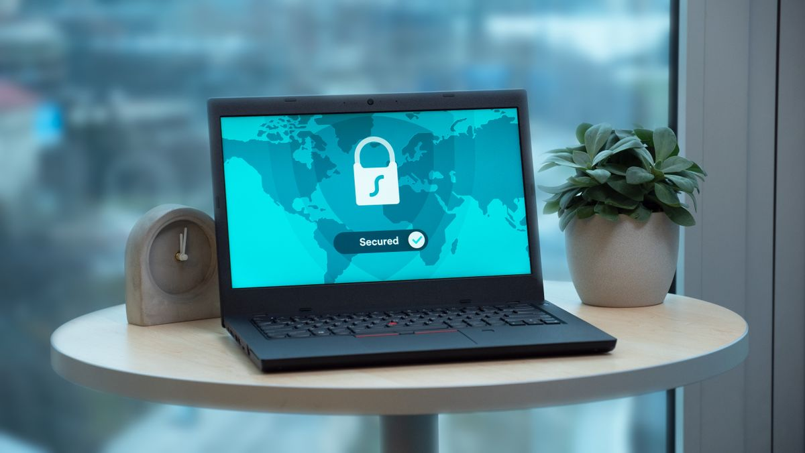

Kamu pasti punya puluhan akun. Email, media sosial, marketplace, m-banking, sampai akun kerja. Kalau semua pakai password yang sama, satu akun bocor berarti semua ikut berisiko. Kalau tiap akun beda password, kamu tidak mungkin menghafal semuanya. Di sinilah password manager membantu. Masalahnya, nama yang paling sering direkomendasikan, 1Password dan LastPass, berbayar. Kabar baiknya, ada pengganti gratis yang fiturnya tidak kalah. Namanya Bitwarden. Per Oktober 2026, paket gratisnya tetap utuh dan bisa dipakai selamanya.
Kenapa password manager berbayar terasa mahal
1Password tidak punya paket gratis permanen. Yang ada hanya uji coba 14 hari, lalu tarifnya 3,99 dolar AS per bulan bila ditagih tahunan. Buat kamu yang cuma butuh menyimpan password dengan rapi, angka itu terasa berat untuk fungsi yang sebenarnya sederhana.
LastPass memang punya paket gratis, tapi paket itu hanya boleh dipakai di satu jenis perangkat. Kamu harus memilih komputer atau HP, tidak bisa keduanya. Buat orang yang tiap hari pindah dari laptop ke HP, batasan itu terasa sekali.
Intinya, dua nama besar ini menaruh fitur yang paling dibutuhkan, sinkronisasi antar perangkat, di balik paywall. Padahal sinkronisasi justru alasan utama orang memakai password manager. Tanpa sinkronisasi, password yang kamu simpan di laptop tidak bisa dipakai waktu login dari HP. Jadi kamu tetap kembali ke cara lama, entah menghafal, entah mencatat di tempat yang tidak aman.

Bitwarden, pengganti gratis yang fiturnya utuh
Bitwarden adalah password manager sumber terbuka. Halaman harga resminya menulis paket gratisnya "Always free", alias gratis selamanya. Yang membuat paket ini istimewa adalah isinya. Kamu bisa menyimpan password tanpa batas dan memakainya di perangkat tanpa batas. Laptop, HP, dan browser, semuanya tersinkron. Ini justru yang dikunci di paket gratis LastPass.
Fitur lain yang ikut gratis antara lain pengelola passkey, generator username dan password, enkripsi zero-knowledge, dan Bitwarden Send untuk berbagi teks atau berkas secara terenkripsi. Kamu juga bisa berbagi isi vault dengan satu pengguna lain secara gratis. Buat pasangan atau rekan kerja yang berbagi satu akun keluarga, fitur ini langsung berguna.
Soal keamanan, kode Bitwarden terbuka dan sudah melewati audit keamanan independen. Karena sumber terbuka, siapa pun bisa memeriksa cara kerjanya. Inilah alasan nama Bitwarden sering muncul di daftar password manager gratis terbaik. Bukan karena tampilannya paling cantik, tapi karena paket gratisnya benar-benar bisa dipakai, bukan sekadar demo.
Kalau nanti kamu mau naik kelas, ada paket Premium seharga 1,65 dolar AS per bulan bila ditagih tahunan. Tapi buat kebutuhan sehari-hari, paket gratisnya sudah cukup. Tidak ada paksaan untuk upgrade, dan tidak ada batas waktu pemakaian.

Cara mulai pakai Bitwarden dalam 10 menit
Pindah ke Bitwarden tidak serumit yang dibayangkan. Ikuti lima langkah ini.
- Buka bitwarden.com dan buat akun dengan email aktif. Pilih master password yang kuat dan panjang, karena ini satu-satunya password yang wajib kamu hafal. Simpan juga kode pemulihan di tempat aman. Kalau master password hilang dan kamu tidak punya kode pemulihan, isi vault biasanya tidak bisa dikembalikan.
- Pasang ekstensi Bitwarden di browser yang kamu pakai, lalu pasang aplikasinya di HP dari Play Store atau App Store.
- Masuk dengan akun yang sama di semua perangkat. Vault kamu langsung tersinkron.
- Impor password lama dari browser. Di pengaturan browser, cari menu ekspor password, lalu impor berkasnya ke vault Bitwarden lewat menu impor di web vault.
- Aktifkan isi otomatis. Mulai sekarang, setiap kali login, Bitwarden menawarkan mengisi username dan password. Kamu juga bisa membuat password baru yang kuat langsung dari generatornya setiap kali daftar akun baru.
Sepuluh menit dan kamu selesai. Setelah itu, tugasmu tinggal satu: berhenti memakai password yang sama di mana-mana. Setiap akun lama yang masih memakai password lama bisa kamu ganti satu per satu, mulai dari yang paling penting seperti email dan m-banking.

Kalau mau cadangan lain, ini dua pilihan gratis
Kalau tampilan Bitwarden terasa terlalu polos buat kamu, ada dua cadangan gratis lain. Proton Pass Free juga memberi login dan perangkat tanpa batas, plus 10 alias email hide-my-email untuk mengurangi spam. Cocok buat kamu yang sudah memakai Proton Mail. NordPass punya paket gratis juga, tapi terbatas satu perangkat. Jadi kalau kamu butuh sinkronisasi, Bitwarden dan Proton Pass lebih masuk akal.
Mana pun yang kamu pilih, prinsipnya sama. Password manager gratis yang resmi jauh lebih aman daripada menyimpan password di catatan HP atau memakai satu password untuk semua akun. Yang berbahaya bukan aplikasi gratisnya, tapi kebiasaan lama yang dibiarkan.
Intinya
Tidak perlu membayar untuk menyimpan password dengan rapi dan aman. Bitwarden membuktikan paket gratis bisa utuh, tanpa batas perangkat dan tanpa batas password. Per Oktober 2026, itulah pengganti paling masuk akal buat 1Password dan LastPass. Coba malam ini, pindahkan password lamamu, dan biarkan satu master password yang bekerja buat kamu.
← Kembali ke Other